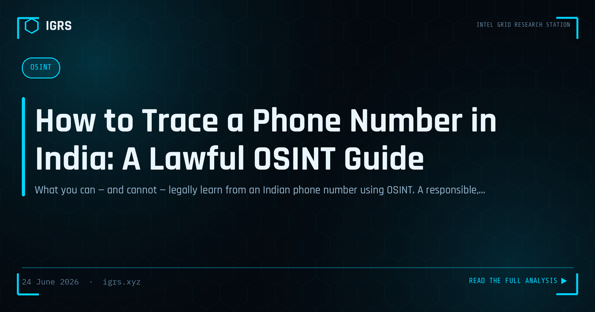

How to Trace a Phone Number in India: A Lawful OSINT Guide for Investigators
Tracing Phone Numbers Through OSINT
A phone number is one of the most valuable pivot points in an investigation. In India, where mobile numbers are linked to identity, banking, and countless services, tracing a number through OSINT can reveal significant information about its owner and activity. For investigators, mastering lawful phone number investigation is a core skill. This guide covers OSINT techniques for tracing phone numbers in the Indian context.
Why Phone Numbers Are Valuable
In India, mobile numbers are deeply tied to identity and activity — linked to bank accounts, UPI, government services, and social media. This makes a phone number a rich starting point: it can connect to a person's identity, their accounts, and their digital footprint. For fraud, harassment, and other investigations, the suspect's phone number is often the key thread that, when traced, unravels their broader identity and activity.
OSINT Techniques for Phone Numbers
| Technique | Reveals |
|---|---|
| Number lookup services | Carrier, region, line type |
| Social media search | Linked accounts and profiles |
| Messaging app checks | Profile names and photos |
| Search engine queries | Public mentions of the number |
Basic Number Analysis
Initial analysis identifies the number's characteristics — the carrier, the telecom circle or region, and whether it is mobile or landline. India's numbering plan allows the original operator and region to be determined, though portability means the current operator may differ. This basic information provides context and a starting point, helping investigators understand the number's origin before pivoting to richer sources.
Linking to Accounts and Profiles
Phone numbers often connect to online accounts. Searching the number across social media, checking whether it is registered on messaging apps (which may reveal a profile name and photo), and querying search engines for public mentions can link the number to a person's online presence. Many platforms allow contact discovery by phone number, and a number registered on messaging or social apps can reveal identifying details about its owner.
The TAFCOP Resource
For verifying mobile connections, the Department of Telecommunications' TAFCOP portal allows checking the mobile numbers registered against an identity, helping detect unauthorised connections. While primarily a consumer protection tool, it is relevant to investigations involving SIM-related fraud and identity verification. Understanding the official Indian telecom resources, including TAFCOP and the role of operators, complements OSINT techniques in phone number investigation.
Authoritative Data Through Legal Process
OSINT reveals what is publicly available, but authoritative subscriber information — the registered owner of a number — is held by telecom operators and obtained through legal process. Production of subscriber details and call data records is sought under Section 94 BNSS, and such records are central to formal investigations. OSINT and legal process are complementary: OSINT generates leads and context quickly, while legal process provides the authoritative, court-admissible subscriber data.
Lawful, Effective Phone Investigation
For Indian investigators, tracing phone numbers combines OSINT techniques — lookup services, social media and messaging checks, and search queries — with official resources like TAFCOP and, for authoritative data, legal process under Section 94 BNSS. Throughout, investigation must remain lawful, respecting privacy and using authorised methods. Done properly, phone number investigation transforms a single number into a thread that reveals identity, accounts, and activity, making it one of the most productive starting points in fraud, harassment, and cybercrime investigations. The skill lies in combining rapid OSINT pivoting with the authoritative data that formal legal process provides, building a complete and defensible picture.